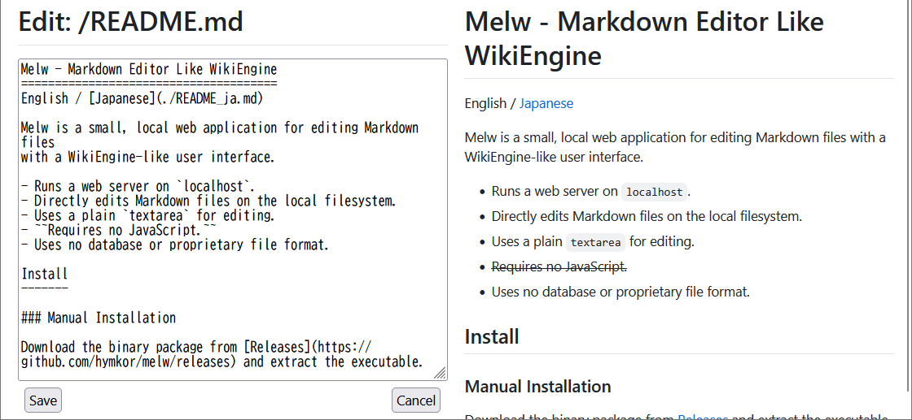

Melw - Markdown Editor Like WikiEngine
( English / Japanese )
Melw は、WikiEngine のような Web ユーザインターフェイスで、 ローカルの Markdown ファイルを編集するための小さな Web アプリケーションです。
- localhost で Web サーバーを起動して動作します。
- ローカルのファイルを直接読み書きします。
- 編集には通常の
textareaを使用します。 JavaScript は使用していません。HTMX使用- データベースや独自のファイル形式は使用しません。

インストール
Manual Installation
Releases よりバイナリパッケージをダウンロードして、実行ファイルを展開してください
eget インストーラーを使う場合 (クロスプラットフォーム)
brew install eget # Unix-like systems
# or
scoop install eget # Windows
cd (YOUR-BIN-DIRECTORY)
eget hymkor/melw
scoop インストーラーを使う場合 (Windowsのみ)
scoop install https://raw.githubusercontent.com/hymkor/melw/master/melw.json
もしくは
scoop bucket add hymkor https://github.com/hymkor/scoop-bucket
scoop install melw
"go install" を使う場合 (要Go言語開発環境)
go install github.com/hymkor/melw@latest
go install は $HOME/go/bin もしくは $GOPATH/bin へ実行ファイルを導入するので、melw を実行するにはそのディレクトリを $PATH に追加する必要があります。
使い方
- Markdown ファイルがあるディレクトリで、
melwの実行ファイルを起動してください。 - ブラウザで http://127.0.0.1:8000 を開いてください。
- melw を起動したディレクトリのファイル一覧がブラウザに表示されます。
- ディレクトリへのリンクをクリックすると、そのディレクトリに移動します。
- Markdown ファイルへのリンクをクリックすると、その内容をレンダリングした画面が表示されます。
- Markdown ファイル以外へのリンクをクリックすると、そのファイルの内容がそのまま表示されます。
- Markdown ファイルのページで
Editボタンを押すと、そのページのソースを編集する画面になります。Previewボタンを押すと、編集したソースをレンダリングした結果をプレビューできます。
現在はほぼリアルタイムにプレビューに反映Saveボタンを押すと、編集したソースをファイルに反映して、編集を終了します。Cancelボタンを押すと、編集を中止し、編集内容を破棄します。
オプション
- -C string
カレントディレクトリを指定 - -P uint
ポート番号 (デフォルト 8000) - -start
サービス起動時にウェブブラウザを開く